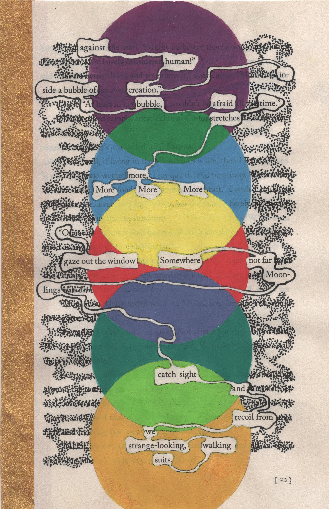
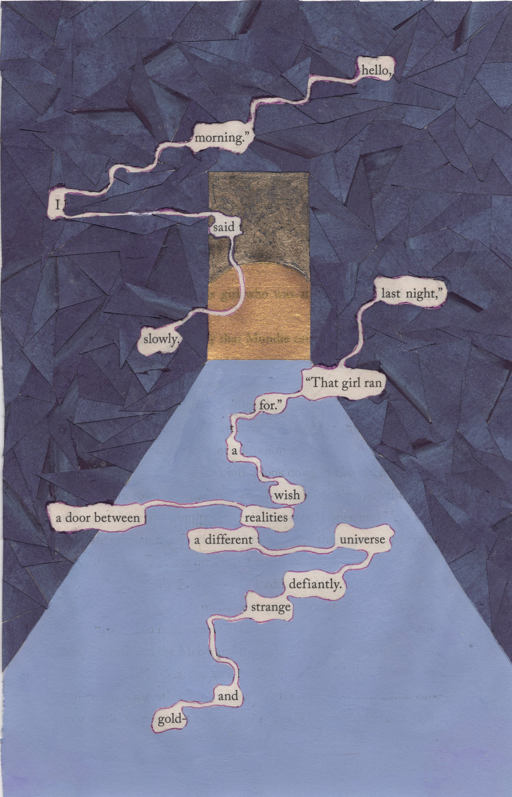
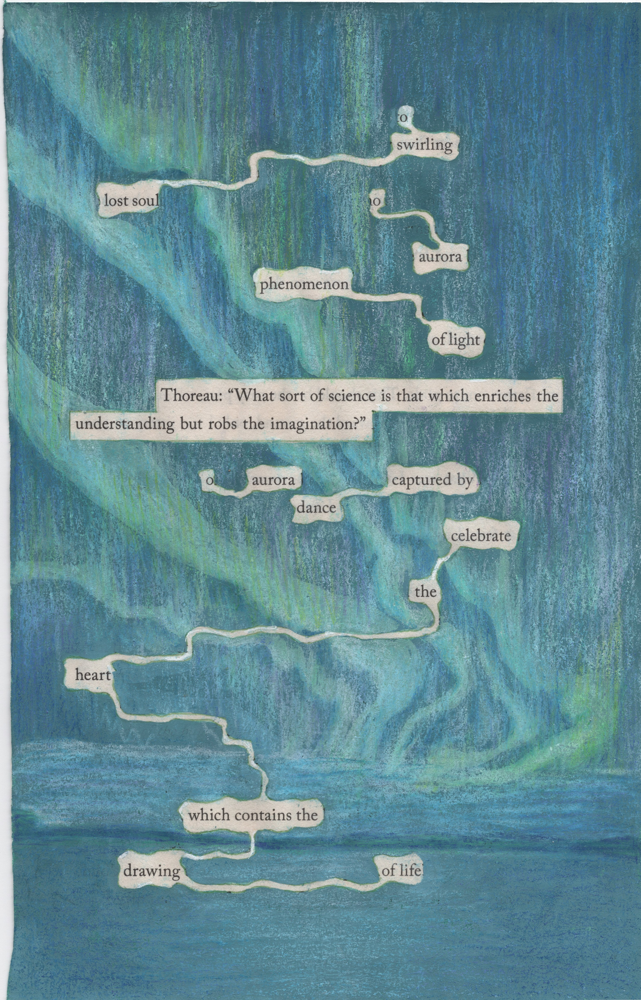
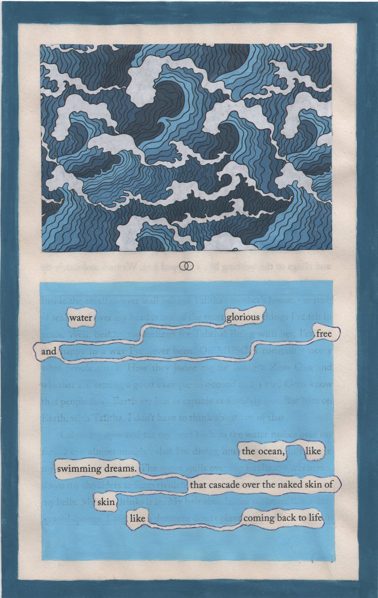

Inspired by Tom Phillip's A Humument: A Treated Victorian Novel. 𖦹 SKILLS: Illustration, Collage𖦹 MEDIUM: Mixed

"against human creation / inside a bubble of a bubble afraid / time stretches more / more more more / O gaze out the window / somewhere not far / moonlings catch sight / and recoil from / we strange-looking, walking suits"

"hello, morning I said slowly / last night that girl ran / for a wish / a door between realities / a different universe / defiantly strange and gold"

"O swirling lost soul / O aurora / phenomenon of light / Thoreau: 'What sort of science is that which enriches the understanding but robs the imagination?' / O aurora / captured by dance / celebrate the heart / which contains the drawing of life"

"water / glorious and free / the ocean, / like swimming dreams / that cascade over the naked skin of skin / like coming back to life"